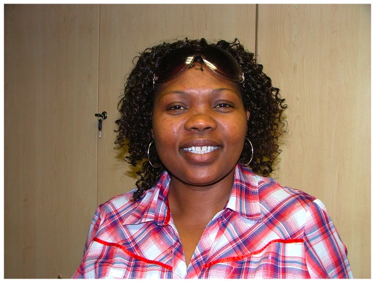

And that's why students rock
by P
Yesterday we celebrated the conclusion of the first phase of the Rip Mix Learners project here at UWC. It was moving to see the excitement and enthusiasm of all the students who had worked so hard during the past year. It was also a little sad, because Nondumiso Sinyenyeko-Sayo who has been running the project is leaving UWC to join the University of Johannesburg. We will miss you Nondu!

Rip Mix Learners is a student-run Open Courseware project, in which students make audio recordings of the lectures, compile class notes, and other materials and share them with their peers online. The site is publicly accessible, but our main audience are the students themselves. We have been running it on a shoe-string budget for the last year, with a little support from the GTZ to purchase audio recorders for the students and a bit of staff time paid for by the Shuttleworth Foundation. After listening to the students share their stories yesterday, I must say, our smallest project turned out to be the most inspiring one.
One presentation really stood out, and it wasn’t by one of the students that are part of the project, but by Aqeelah, a classmate, who had been using the materials. She gave three examples how OER can make a big difference, which are both surprising and beautiful:
- Students from Zimbabwe had been asking her for materials on Natural Medicine, and complained that they couldn’t find anything online. She pointed them to the resources that her fellow students had compiled, and which she had been using for a few weeks. The Zimbabweans couldn’t believe that Universities were publishing course materials like this online – Aqeelah proudly pointed out that not all Universities are doing it (I would like to add “not yet”), but that her friends were actually running the project.
- When the lecturer spilt coffee over his computer and lost all of his data, the students provide him with a backup of his lecture notes, which they had stored online. I can just imagine how the students loved it.
- Finally, the site became so popular with other students in the class, that they started demanding immediate upload of the notes. Complaints rolled in if the materials had not bee uploaded within hours after the lecture.
I had such a good time hearing all the different perspectives and ideas for how we could make the project bigger and better, and seeing all the smiles and enthusiasm. The fact that the Vice-Chancellor took time out of his busy schedule to spend with us and committed his support to the project was a nice bonus, but it really was a day of the students. The future of the OER movement does not lie with large institutional projects, but with the students getting the support they need to take things in their own hands. Well done guys and girls!
Pingback: P2P Foundation » Blog Archive » Bottom-up Open Educational Resources
Pingback: Blogroll » Bottom-up Open Educational Resources
Pingback: Blogroll » Links for 2008-10-19 [del.icio.us]
Pingback: Rip Mix Learners- the Student-run OCW Project « Open Education News